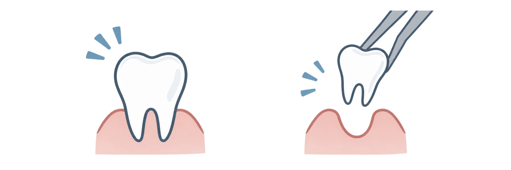

「抜くしかない」に納得できない
抜く前に、検査で確かめます。
残す場合と抜く場合の違いも、検査の結果とあわせてご説明します。
一度抜いた歯は、元に戻せません。当院では抜く前に、根の治療（根管治療）で歯を残せるかを検査します。治療を受けるかは、結果を聞いてから決められます。
紹介状・レントゲンがなくても受診できます
JR三ノ宮駅西口から徒歩30秒
次のようなご相談が多く寄せられます。
抜く前に、検査で確かめます。
残す場合と抜く場合の違いも、検査の結果とあわせてご説明します。
歯を残せれば、手術は不要です。
歯を残す治療とインプラントの違いは、下の比較でまとめています。
根の治療のやり直しで改善する場合があります。
何度治療した歯でも、それだけを理由に抜歯と決まるわけではありません。

抜歯は、やり直しができない処置です
「残せたかもしれない」と
分かってからでは、戻せません

※根管治療の費用と期間が余分にかかります。
※どちらが優れているかではなく、順番の違いです。
インプラント・ブリッジ・入れ歯は、失った歯の働きを補う治療として広く行われています。違いは、歯を抜いたあとに行う治療だという点です。
当院では、まず歯を残せるかの検査から始めます。抜いたほうがよい場合は、その理由をご説明します。
インプラント・ブリッジ・入れ歯に、歯を抜く前に受けられる「歯を残す治療（根管治療）」を加えて比べます。